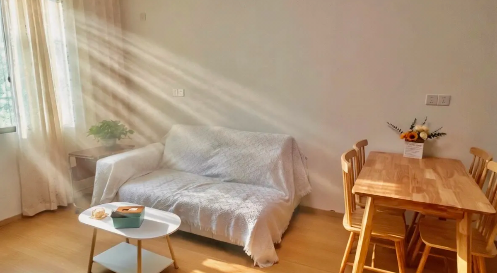
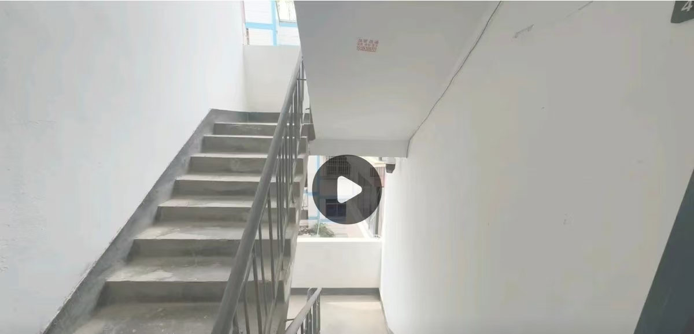
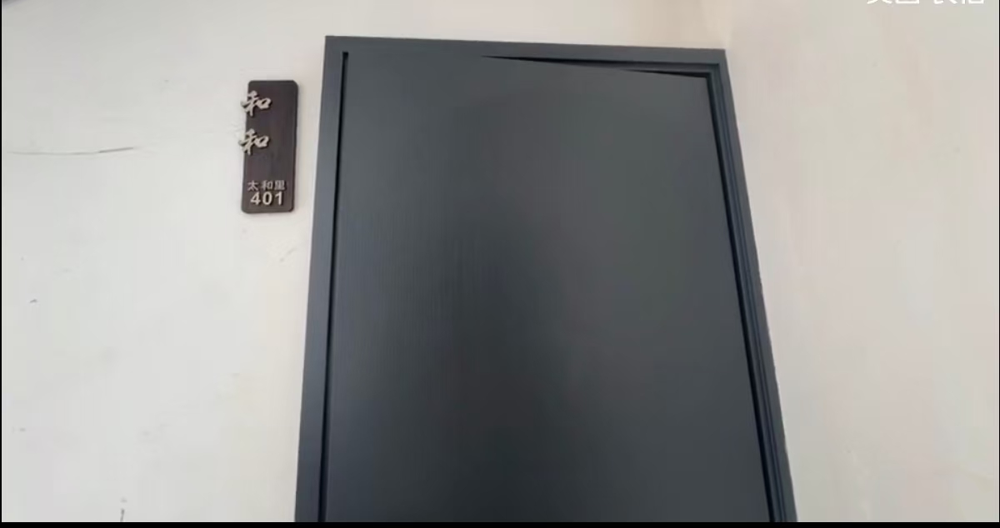
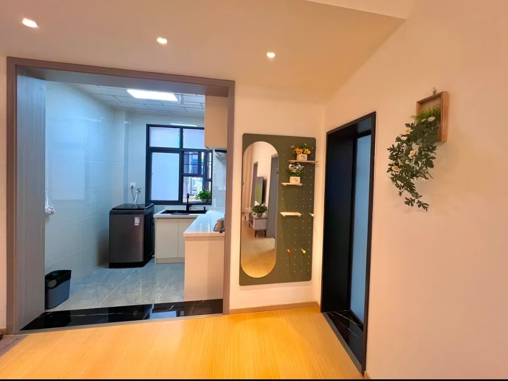
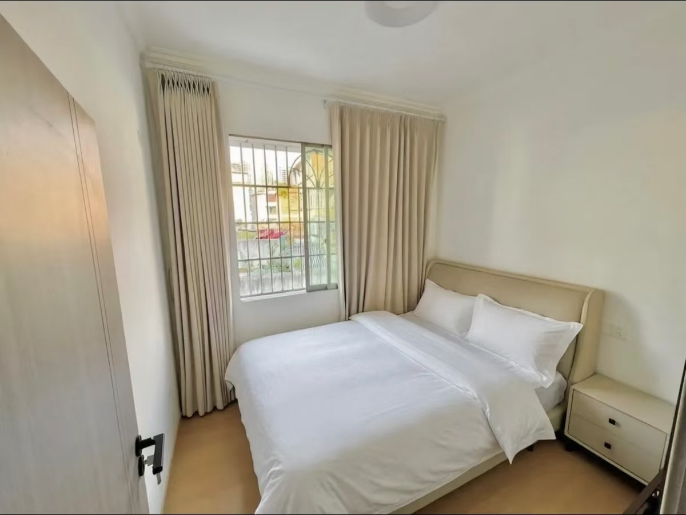
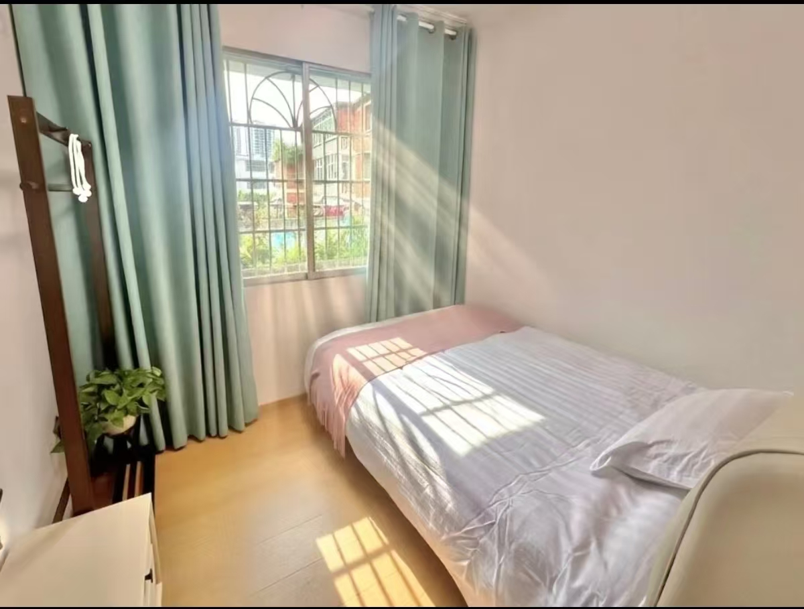
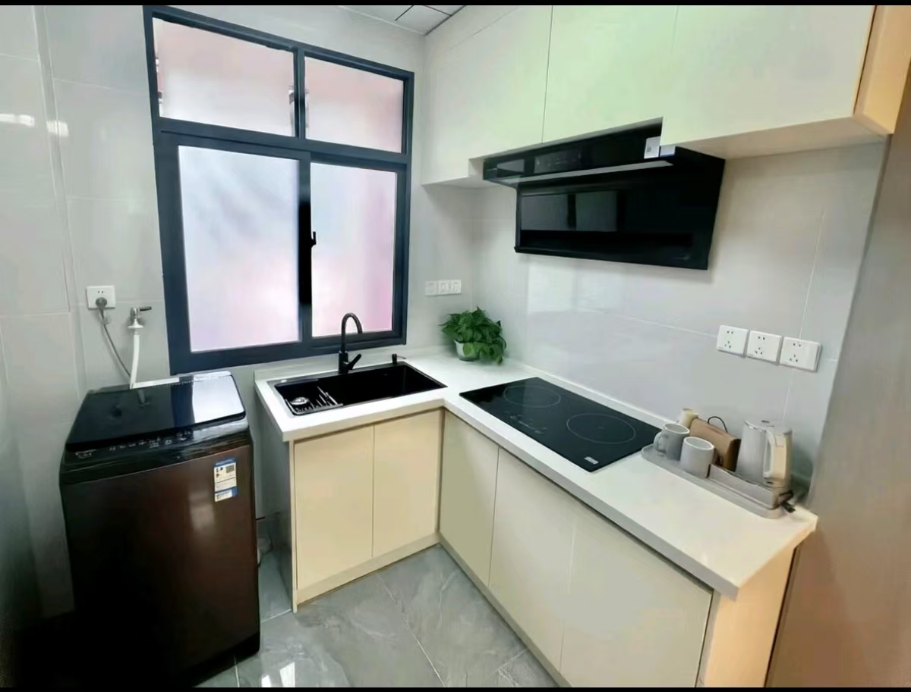
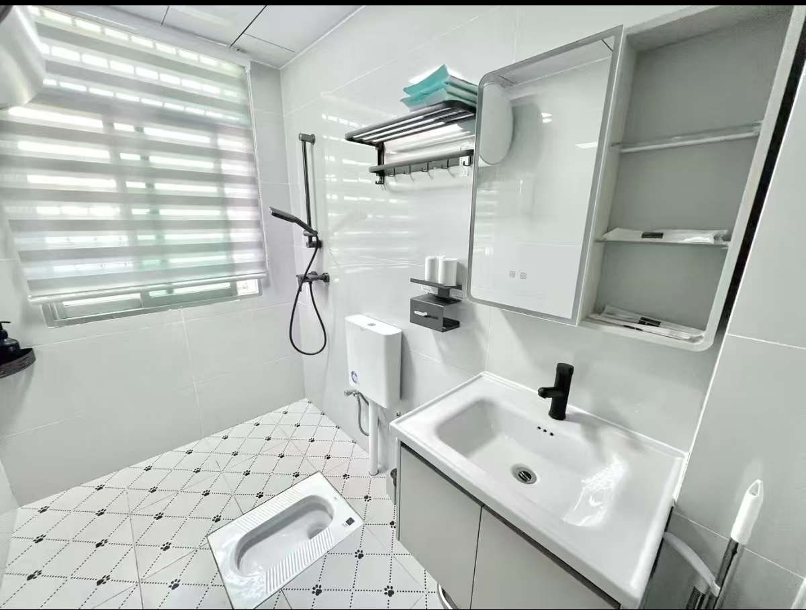
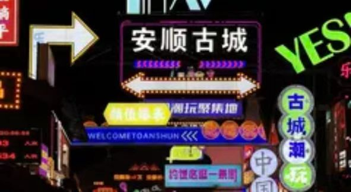

安顺市中心 · 两居整套 · 宠物友好 · 步行可达小吃街

环境优美，位置便利，欢迎预定～
联系电话：13809613879
立即联系房东点击按钮后下滑查看详情
干净明亮的公共空间，入住安心又方便。


整套房源 70m²，2室1厅1厨1卫，适合朋友、情侣或家庭入住。
整套房源 70m²，2室1厅1厨1卫。
卧室 1：1张床，2m × 1.8m。
卧室 2：1张床，1.8m × 1.5m。
房间价格区间：￥150 - ￥350。
房间价格随时间变化，详情请咨询房东😊

1张床，2m × 1.8m。

1张床，1.8m × 1.5m。



下楼就是顾府街和太和步行街，逛吃方便，散步也可以到安顺历史文化古城。

从入住到退房，提供贴心的管家式服务，让你住得轻松又安心。
亲爱的朋友，欢迎来安顺玩！你的「安顺市中心逛吃躺平总部」已就位～
【太和里在哪？】安顺小吃C位驻扎地！下楼就是顾府街 × 太和步行街“双buff”。 安顺顶流必吃榜全在步行5min内：宫鼎茶、小锅凉粉、裹剪、烙锅、冰浆、砂锅饭、破酥包等。
拐个弯就是烟火气冲天的小十字！散步8min即可到达安顺历史文化古城。 附近有文庙武庙、谷氏旧居等景点，逛吃逛拍不用等，带娃带友都自在。
【躺平小窝长啥样？】温馨两居，1双人床 + 1单人床。 标配“全家睡到自然醒”魔法，厨房已解锁，深夜食堂或早餐自由安排。
【闪亮加成】麻将机已就位，杠上开花美滋滋。可投屏网络电视，打造你的专属影院。 冰箱已清空，冰粉冰浆尽管囤。厕所装暖气，洗澡换衣暖烘烘。科技智能马桶，冬天不怕冻PP。
【特别通告】我们是宠物友好民宿，毛孩子可以一起来度假啦～
【老板娘和她的服务】老板娘24小时在线，从地道美食推荐到游玩路线规划，有问必答。 所有床单被套一客一换，全屋深度消毒保洁，干净安心。 提供行李寄存和全程管家式服务，从入住到退房，你的需求就是我们的行动指南。
房间已洗香香，等你来当几天安顺“本地人”～
洗衣机、新风系统、空调、沙发、冰箱、无线网络、遮光窗帘、热水壶、茶几。
白色床品，一次性使用类型。
热水淋浴、一次性洗漱用品、浴巾、拖鞋、独立卫浴、毛巾。
吹风机、洗发水、沐浴露、护发素、浴霸、防滑垫、剃须刀、纸巾。
投影仪、电视机。
智能门锁、门禁系统、灭火器、报警器、烟雾报警器、公共监控。
电磁炉、电饭煲、锅具、炒锅、刀具菜板、餐桌、抽油烟机。
阳台。
安顺 西秀区 东街街道太和街 42号 3栋